🚀 Prvi zagon
Najkrajša pot do krmilnika, ki krmi sam. Delaš ob krmilniku, s telefonom v roki. Koraki si sledijo v vrstnem redu, ki prepreči večino kasnejših težav.
✓Preden začneš, pripravi
- Napolnjeno baterijo.
- Kartico SIM, ki je aktivna, ima omogočene SMS in dobroimetje. Prenos podatkov ni potreben. Najbolj zanesljivo deluje kartica na omrežju A1 (npr. HoT) ali Telekom Slovenije – zakaj, piše v poglavju Omrežje in povezljivost.
- PIN kartice SIM (4–8 števk, na embalaži kartice), če ga kartica ima.
- Krmo – sod boš med nastavitvijo napolnil.
1Namesti krmilnik na sod
Krmilnik pritrdi na pokrov soda, sod zapri z obročem in ga obesi ali postavi na krmišče.
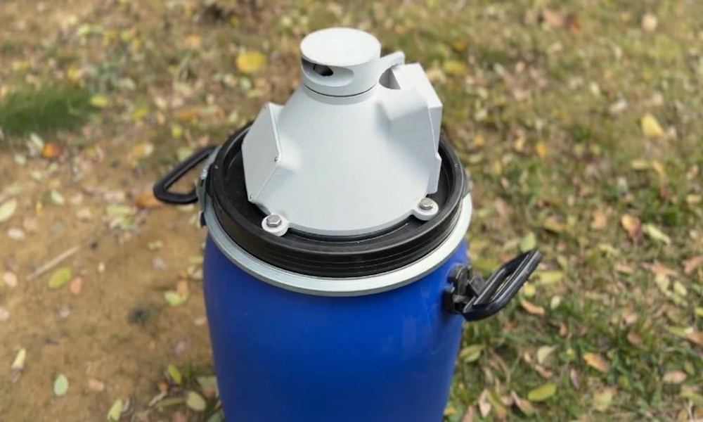
2Vstavi kartico SIM in priključi baterijo
Vstavi kartico SIM in priključi napajanje. Krmilnik se ob tem zbudi in za približno 3 minute prižge svoje WiFi omrežje – takoj nadaljuj z naslednjim korakom.
3Poveži telefon na krmilnik
- Na telefonu odpri Nastavitve → WiFi.
- Izberi omrežje HuntersFeeder_Setup.
- Če telefon javi, da omrežje »nima interneta«, izberi Ostani povezan (ali »Uporabi brez interneta«). Krmilnik internet ne potrebuje.
4Odpre se aplikacija – čarovnik za nastavitev
Stran z aplikacijo se večinoma odpre sama. Če se ne, odpri brskalnik in vpiši http://192.168.4.1. Nič se ne namešča, internet ni potreben.
Ob prvem odprtju te vodi čarovnik:
- PIN kartice SIM – vpiši ga, če ga kartica zahteva. Polje sproti pove, kaj kartica počne (npr. »kartica je že odklenjena – PIN ni potreben«).
- Tvoja telefonska številka – s te številke boš krmilnik upravljal in nanjo pridejo opozorila. Ta številka ima vedno vse pravice.
- Pritisni Shrani in nadaljuj.
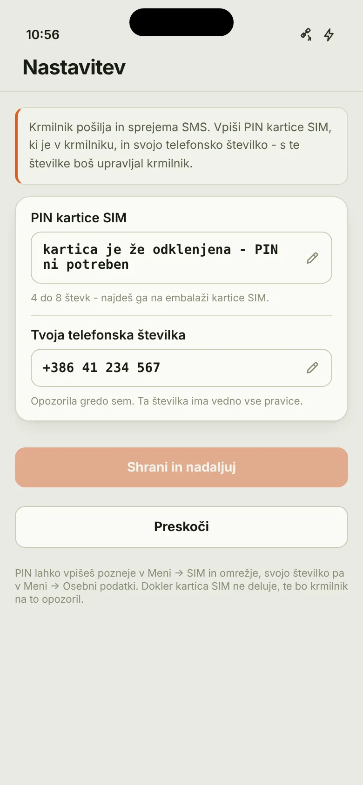
5Napolni sod in pritisni »Napolnil sod«
- Napolni sod s krmo, tako da krma pokrije senzor na dnu.
- Na prvi strani (Pregled) pritisni Napolnil sod in potrdi z V redu.
Krmilnik si tako zapomni, kako izgleda »hrana je«, in kasneje sam zazna prazen sod.
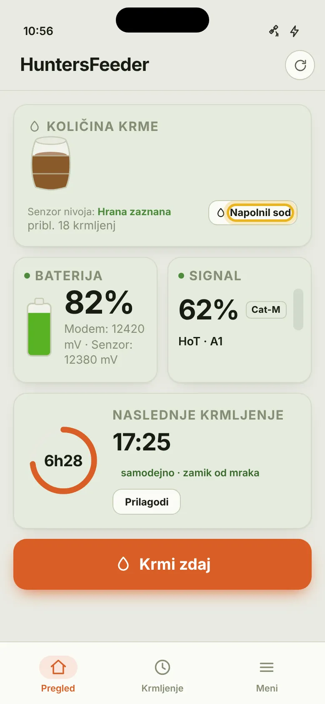
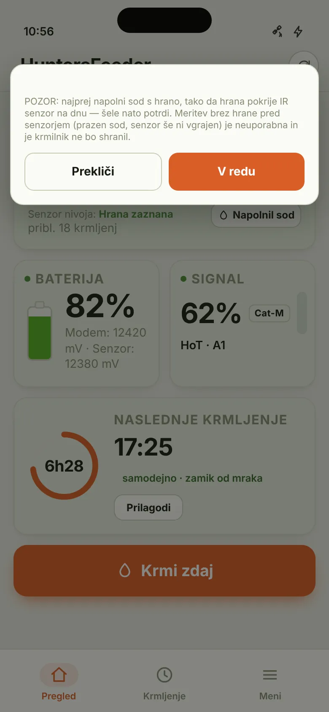
6Kalibriraj motor
Zaženi kalibracijo motorja s polnim sodom. Motor se vrti približno 10 sekund in iztrese nekaj krme. Krmilnik si zapomni, kaj je za motor normalno, in kasneje sam prepozna zamašen ali zagozden polž.
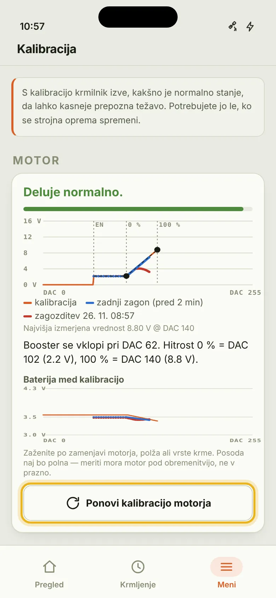
7Nastavi urnik in vklopi samodejno krmljenje
- Vklopi Samodejno krmljenje (①) – ob prvem zagonu je izklopljeno.
- Izberi Kdaj (②): ob fiksni uri ali zamik od mraka (③, od 4 ure prej do 4 ure kasneje). Poletni in zimski čas se upoštevata sama.
- Pod Koliko nastavi čas delovanja motorja (privzeto 5 s) in hitrost. Več o tem v Osnovnih nastavitvah.
Nastavitve se shranijo same, ko spustiš drsnik ali pritisneš stikalo.
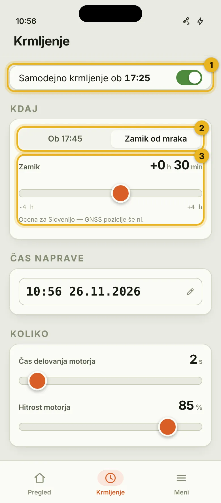
8Preveri, da vse deluje
Na prvi strani (Pregled) preveri:
- Količina krme: »Hrana zaznana«, kartica je zelena.
- Baterija: odstotek; pod 20 % jo napolni.
- Signal: črtice in tehnologija (Cat-M, 2G ali NB-IoT) ter ime omrežja, npr. »HoT · A1«.
- Naslednje krmljenje: prava ura.
Preizkusi SMS: s svojega telefona pošlji na številko kartice v krmilniku INFO. V minuti dobiš odgovor z baterijo, signalom, hrano in naslednjim krmljenjem.
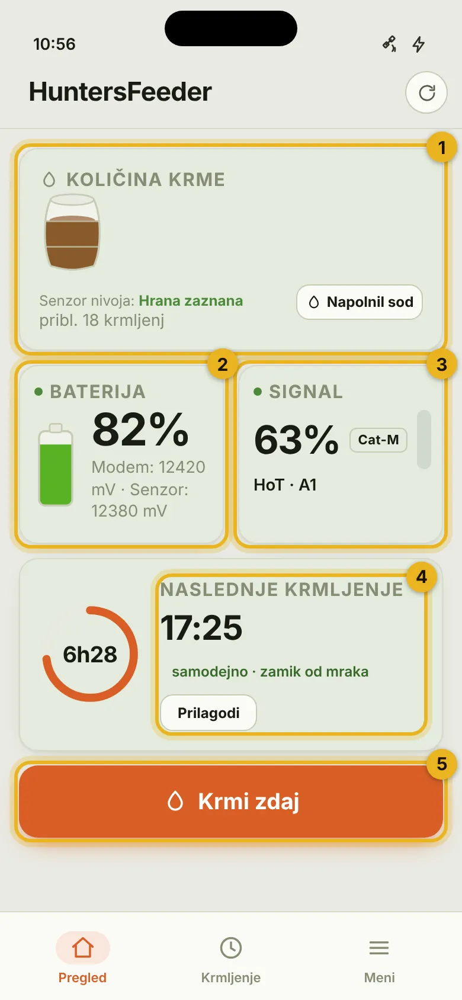
9Zaključi in pojdi
Aplikacije ni treba zapirati: po 5 minutah brez uporabe se WiFi sam izklopi in krmilnik zaspi (gumb Izklopi na zaslonu »Naprava je nedejavna« ga ugasne takoj). Krmljenje po urniku in SMS delujejo naprej.
⭐ Priporočene nastavitve za zanesljivo delovanje
S temi nastavitvami krmilnik dela najbolj zanesljivo in varčno. Vse spremeniš v aplikaciji.
| Nastavitev | Priporočeno | Zakaj |
|---|---|---|
| Izbira omrežja | 🤖 Samodejno | Krmilnik sam najde omrežje, na katerem SMS dela, in si ga zapomni. |
| Način delovanja | ⚖️ Uravnoteženo | SMS pride z zamikom do ~20 s, baterija zdrži dlje kot pri »Odzivno«. |
| Zapomni si PIN | vklopljeno | Brez tega se krmilnik po ponovnem zagonu ne vrne v omrežje. |
| Geslo za WiFi krmilnika | nastavi (8–32 znakov) | Kdor je povezan na WiFi krmilnika, lahko v aplikaciji naredi vse. |
| Opozorila zame | Osnovno | Dobiš vse pomembno (prazna baterija, prazen sod, zastoj motorja), brez poročila ob vsakem krmljenju. |
| Dnevna omejitev SMS | 30 (privzeto) | Napaka ali tuja številka ne more porabiti dobroimetja. |
| Lokacija (GPS) | izklopljena | Še ne deluje zanesljivo; vklopljena le troši baterijo. |
| Kalibracija | sod in motor | Brez nje krmilnik ne zazna praznega soda ali zagozdenega polža. |
📶 Omrežje in povezljivost
Krmilnik ima dve povezavi: WiFi za aplikacijo, ko stojiš ob njem, in mobilno omrežje za SMS od koderkoli.
A · Povezava na krmilnik (WiFi)
Aplikacija teče na krmilniku samem. Do nje prideš prek njegovega WiFi omrežja, ko si v bližini (nekaj deset metrov, skozi ovire manj).
1Prižgi WiFi krmilnika
WiFi je prižgan:
- ob vklopu napajanja (za ~3 minute, če se nihče ne poveže),
- po SMS VKLOPI (angl. ON) z lastnikove številke.
Po 5 minutah brez uporabe se sam izklopi. SMS IZKLOPI ga izklopi takoj.
2Poveži se
- WiFi na telefonu → HuntersFeeder_Setup (če si nastavil geslo, ga vpiši).
- Stran se odpre sama. Če se ne: brskalnik → http://192.168.4.1.
3Če se telefon sam prekinja
Nekateri telefoni zapustijo WiFi brez interneta. Pomaga eno od tega:
- ko telefon vpraša, izberi Ostani povezan / »Uporabi to omrežje brez interneta«;
- izklopi mobilne podatke na telefonu, da ne išče interneta mimo krmilnika;
- v aplikaciji izklopi Samodejni portal (②) in stran odpiraj ročno na 192.168.4.1.
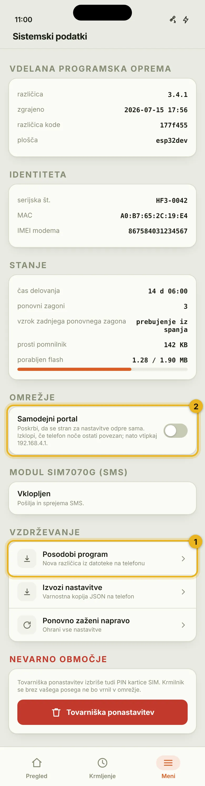
B · Katero mobilno omrežje krmilnik uporablja
Mobilni modul pozna tri tehnologije za naprave: Cat-M (LTE-M), 2G in NB-IoT. Navadnega 4G, 3G in 5G, ki jih uporablja telefon, ne pozna – zato ima telefon lahko na istem mestu odličen signal, krmilnik pa ne.
| Tehnologija | SMS | Baterija | Opomba |
|---|---|---|---|
| Cat-M | ✅ dobro | varčno | najboljša izbira; nimajo je vsi operaterji |
| 2G | ✅ dobro | porabi več | tu ni varčevanja; operaterji ga počasi ukinjajo |
| NB-IoT | ⚠️ morda ne dela | zelo varčno | krmilnik se lahko poveže, SMS pa pri nekaterih operaterjih ne gredo |
| Operater | Cat-M | NB-IoT | 2G | Opomba |
|---|---|---|---|---|
| A1 Slovenija | da | da | da | na njem delujejo tudi HoT, bob, T-2 · preizkušeno s HoT |
| Telekom Slovenije | da | da | da | |
| Telemach | ni potrjeno | da | da | glej opombo spodaj |
Podatki o operaterjih so iz javnih virov in se lahko spremenijo. Pokritost v svojem lovišču preveri na kraju samem.
iKje vidiš, na katerem omrežju je krmilnik
- Pregled → kartica Signal: odstotek, črtice, tehnologija (Cat-M / 2G / NB-IoT) in ime, npr. »HoT · A1« – najprej ponudnik s kartice, nato omrežje, na katerem kartica deluje. R pomeni gostovanje.
- Meni → SIM in omrežje: trenutno omrežje, način delovanja in seznam omrežij, ki so delovala.
- Med iskanjem piše »🔎 Iščem omrežje (2/3)«.
Samodejna izbira poskusi po vrsti Cat-M → 2G → NB-IoT (vsako do 90 s), si zapomni, kar deluje (za vsako kartico posebej), in enkrat na dan poskusi boljše omrežje. Če SMS na nekem omrežju dvakrat zapored ne uspe zaradi omrežja, ga za en dan izpusti.
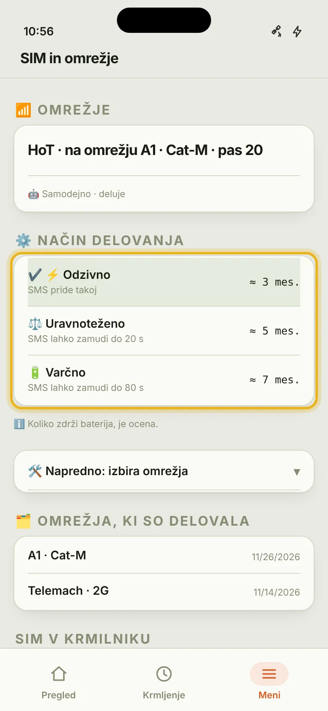
C · Kako zamenjaš omrežje
Priporočeno je 🤖 Samodejno. Ročno izberi samo, ko veš, kaj na tvojem krmišču deluje (npr. pri Telemach kartici poskusiš Samo 2G).
✓Koraki
- Poveži se na krmilnik in odpri Meni → SIM in omrežje.
- Pomakni se do 🛠️ Napredno: izbira omrežja in ga odpri.
- Izberi: 🤖 Samodejno (priporočeno), Samo Cat-M, Samo NB-IoT ali Samo 2G. Pod izbiro se pokaže, kaj to pomeni.
- Pritisni 💾 Shrani in potrdi. Izbira se shrani šele po potrditvi.
- Na Pregled počakaj, da kartica Signal pokaže novo tehnologijo, nato pošlji SMS INFO in preveri, da odgovor pride.
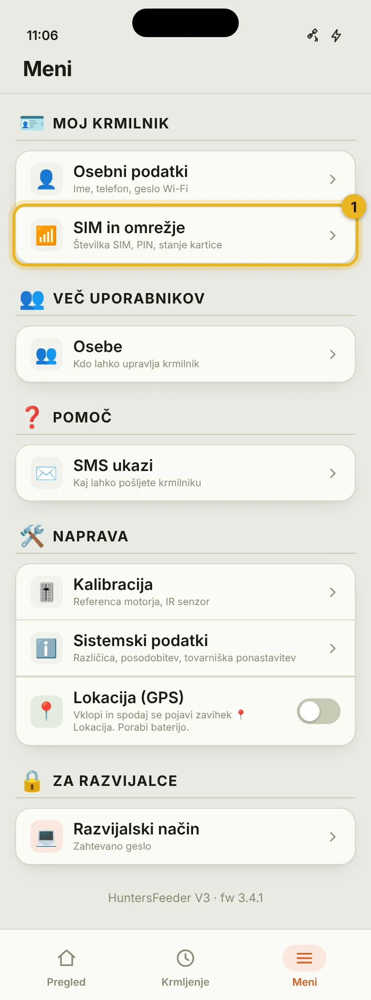
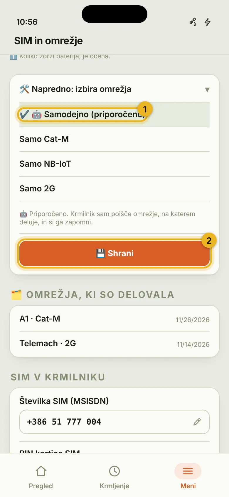
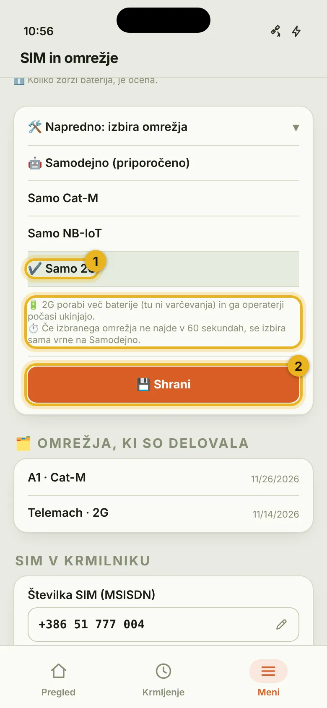
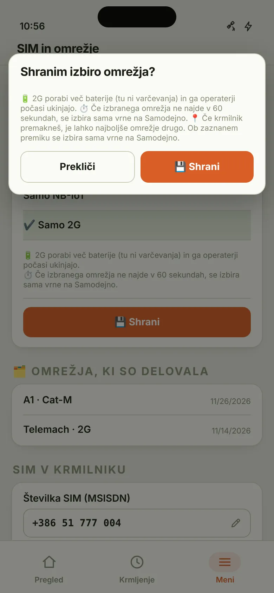
D · Način delovanja (varčevanje)
| Način | SMS do krmilnika | Baterija |
|---|---|---|
| ⚡ Odzivno | takoj | največja poraba |
| ⚖️ Uravnoteženo | z zamikom do ~20 s | srednja · priporočeno |
| 🔋 Varčno | z zamikom do ~80 s | najmanjša poraba |
- Varčevanje mora odobriti omrežje – aplikacija pokaže, kaj je omrežje dovolilo.
- Na 2G so vsi trije načini enaki, tam takega varčevanja ni.
- Mesece ob načinih so ocena, ne meritev; terenske meritve še potekajo.
E · Kartica SIM in PIN
- PIN (4–8 števk) vpišeš tukaj. Krmilnik ga ob zagonu poskusi samo enkrat, da se kartica ne zaklene.
- Zapomni si PIN naj bo vklopljen – sicer se krmilnik po ponovnem zagonu ne vrne v omrežje.
- Stanje kartice: deluje · čaka na PIN · napačen PIN · zaklenjena s PUK · ni kartice.
- Zaklenjena s PUK (trije napačni PIN-i): kartico vstavi v telefon, odkleni jo s kodo PUK, nato jo vrni v krmilnik.
- Menjava kartice ni premik: krmilnik stara omrežja tiho pozabi in začne iskati znova. Ne pozabi vpisati PIN-a nove kartice.
- Kartica mora biti aktivna in imeti dobroimetje. Predplačniške kartice po daljšem neuporabljanju lahko potečejo. Vsak SMS, ki ga krmilnik pošlje, plača kartica v krmilniku.
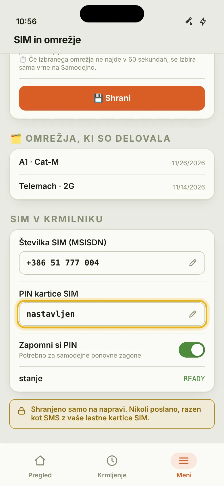
⚙️ Osnovne nastavitve
Vse se shrani samo, ko spustiš drsnik ali pritisneš stikalo. Če shranjevanje ne uspe, se pokaže gumb za ponovni poskus.
A · Urnik krmljenja
- Samodejno krmljenje (①) – vklop/izklop. Ob prvem zagonu je izklopljeno.
- Ob fiksnem času (②) – vsak dan ob izbrani uri tvojega lokalnega časa.
- Zamik od mraka (③) – od 4 ure pred do 4 ure po mraku, npr. 30 min po mraku. Krmilnik mrak izračuna sam; brez lokacije GPS uporabi oceno za Slovenijo, kar je dovolj natančno.
- Čas naprave – pove, koliko je ura na krmilniku in od kod jo ima. Ob odprtju aplikacije jo telefon nastavi sam.
B · Koliko krme pade
- Čas delovanja motorja (①) – 1 do 120 sekund na krmljenje (privzeto 5 s).
- Hitrost motorja (②) – 0–100 %. Ko premakneš drsnik, se pokaže gumb Testiraj 2,5 s, da vidiš, koliko pade.
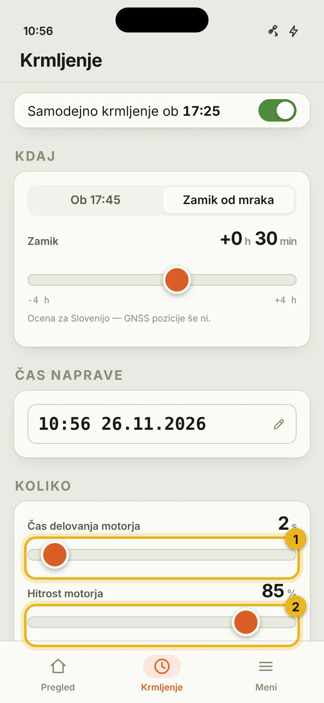
C · Ročno krmljenje
- V aplikaciji: Pregled → Krmi zdaj in potrdi. Med vrtenjem se gumb spremeni v USTAVI.
- S SMS: HRANI (za shranjeni čas) ali HRANI 10 (za 10 sekund). Odgovor pride, ko je krmljenje končano.
Ročno krmljenje dela tudi, ko je samodejno izklopljeno ali je sod »zaklenjen« zaradi praznega senzorja.
D · Osebni podatki in geslo WiFi
- Ime, priimek in telefonska številka lastnika – opozorila gredo na to številko, ki ima vedno vse pravice.
- Geslo za WiFi (8–32 znakov) – privzeto je omrežje odprto. Novo geslo velja ob naslednjem vklopu WiFi, ne takoj (sicer bi te odklopilo sredi dela).
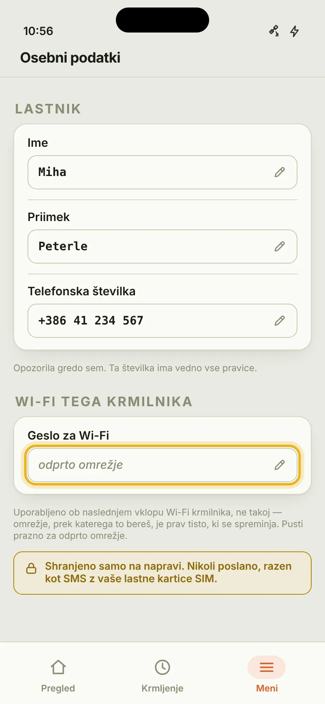
E · Osebe in pravice
- Pritisni + Dodaj osebo.
- Vpiši ime in telefonsko številko (privzeto +386; tuje številke delujejo).
- Izberi pravico in pritisni Dodaj:
- Samo prejema – dobiva opozorila, ukazov ne more pošiljati.
- Polni nadzor – dobiva opozorila in krmilnik upravlja s SMS.
Do 6 oseb poleg lastnika. Tap na osebo jo uredi ali odstrani. Ista številka ne more biti na seznamu dvakrat. Osebo dodaš tudi s SMS DODAJ Ime Telefon (dobi »samo prejema«).
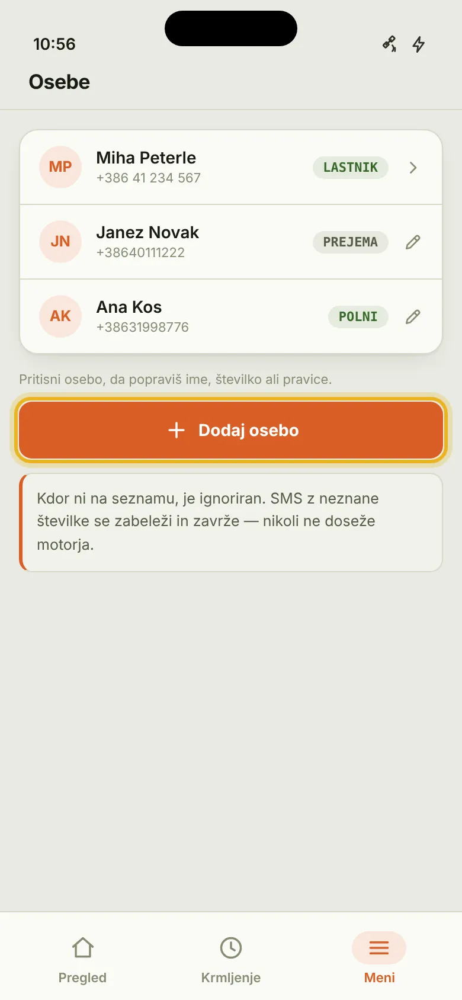
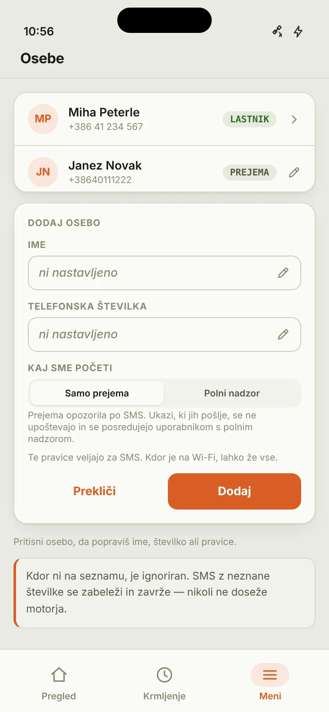
F · Lokacija (GPS) in opozorilo o kraji
- Ko lokacijo vklopiš, se spodaj pojavi zavihek 📍 Lokacija.
- GPS se prižge šele, ko iskanje zahtevaš (tap »Tapni za iskanje lokacije«, SMS LOKACIJA ali DOMOV) ali po krmljenju, če je vklopljeno opozorilo o kraji.
- Med iskanjem (do 5 min) SMS ne delujejo – GPS in mobilno omrežje si delita radio. Zadržana sporočila gredo, ko je omrežje nazaj.
- Opozorilo o kraji: nastaviš polmer (10–2000 m). Če je krmilnik dlje, pride SMS »OPOZORILO: naprava premaknjena!« (največ enkrat na 24 h).
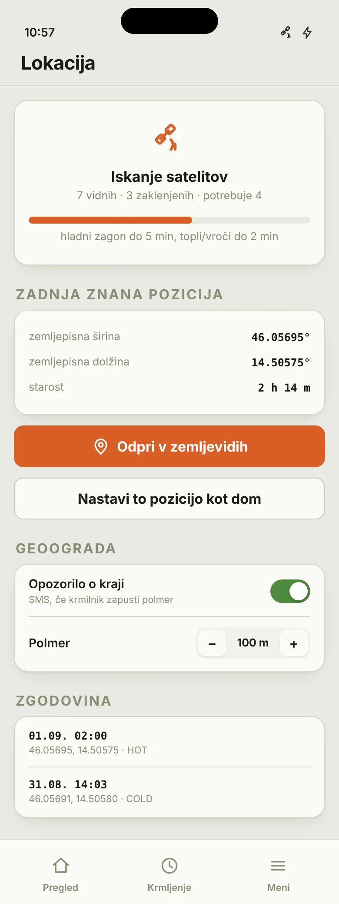
✉️ Upravljanje s SMS
SMS deluje od koderkoli, kjer ima krmilnik signal. Ukaz pošlješ na številko kartice SIM v krmilniku z lastnikove številke ali s številke osebe s polnim nadzorom.
A · Kako pošlješ ukaz
- Velikost črk ni pomembna. Delujejo slovenski in angleški ukazi.
- Piši brez šumnikov (IZBRISI, POMOC). Tudi odgovori so brez šumnikov.
- Odgovori so v jeziku naprave (privzeto slovenščina).
- Kdaj pride odgovor: običajno v nekaj sekundah do minute. V načinu Uravnoteženo/Varčno SMS do krmilnika zamudi do ~20/~80 s. Med krmljenjem odgovori počakajo, da se motor ustavi; med iskanjem GPS (do 5 min) SMS ne gredo.
- Ukaz osebe »samo prejema« se ne izvede (posreduje se lastniku). Neznani številki krmilnik ne odgovori.
B · Seznam ukazov
| Ukaz | Angl. | Kaj naredi | Kdo sme |
|---|---|---|---|
| INFO | INFO | en SMS: baterija, signal, hrana, samodejno krmljenje, motor, ura | lastnik, polni nadzor |
| POMOC | HELP | seznam ukazov | lastnik, polni nadzor |
| NAVODILA | INSTRUCTIONS | podroben opis ukazov (več SMS) | lastnik, polni nadzor |
| HRANI / HRANI X | FEED / FEED X | nahrani zdaj (za shranjeni čas / X sekund, 1–120) | lastnik, polni nadzor |
| AON / AOFF | AON / AOFF | vklopi / izklopi samodejno krmljenje | lastnik, polni nadzor |
| TRAJANJE X | DURATION X | shranjeni čas krmljenja (1–120 s) | lastnik, polni nadzor |
| VKLOPI / IZKLOPI | ON / OFF | vklopi / izklopi WiFi krmilnika za aplikacijo | lastnik, polni nadzor |
| KALIBRIRAJ (ali ODBLOKIRAJ) | CALIBRATE / CLEARJAM | preveri in odblokira motor; en SMS z izidom | lastnik, polni nadzor |
| UPORABNIKI | USERS | seznam oseb | lastnik, polni nadzor |
| DODAJ Ime Telefon | ADD Name Phone | doda osebo (samo prejema) | lastnik, polni nadzor |
| IZBRISI X | DELETE X | odstrani osebo številka X | lastnik, polni nadzor |
| PRAVICE X FULL / BASIC | RIGHTS X FULL/BASIC | polni nadzor ali samo prejema | samo lastnik |
| LOKACIJA | LOCATION | lokacija kot povezava na zemljevid (preizkusno) | lastnik, polni nadzor |
| DOMOV | SETHOME | trenutno lokacijo shrani kot dom | lastnik, polni nadzor |
| PONASTAVI | RESETSMS | ponastavi današnji števec SMS | samo lastnik |
C · Opozorila in dnevna omejitev
Raven opozoril nastaviš posebej zase (①) in za ostale osebe (②): Izklop · Osnovno · Razširjeno · Vse. Pod izbiro aplikacija pokaže, kaj boš dobil.
| Raven | Kaj dobiš |
|---|---|
| Izklop | nič – niti, ko bo prazen (napake se vseeno vidijo v aplikaciji) |
| Osnovno priporočeno | prazna baterija, prazen sod, preskočeno krmljenje, kritične napake (zastoj motorja, kraja) |
| Razširjeno | + sporočila neznanih številk in operaterja |
| Vse | + poročilo po vsakem krmljenju |
Dnevna omejitev SMS (③, privzeto 30, nastavljivo 5–50) šteje, kar krmilnik pošlje sam. Pri 80 % dobiš SMS; ob omejitvi se poročila ustavijo do polnoči (UTC – pozimi ob 1.00, poleti ob 2.00 po našem času). Odgovori na tvoje ukaze in kritična opozorila gredo vedno. Števec ponastaviš s PONASTAVI.
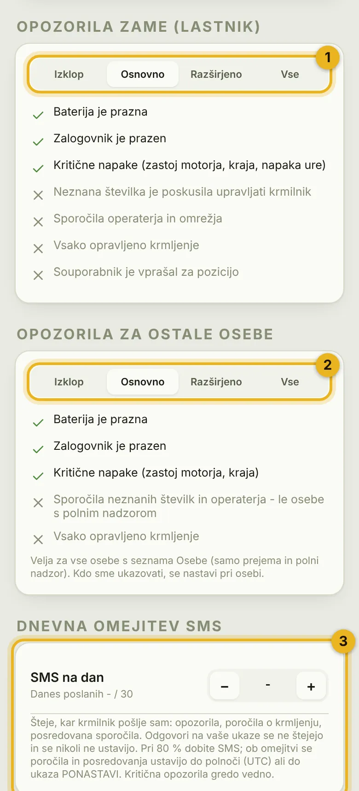
🛠️ Vzdrževanje
Krmilnik večino časa globoko spi in se zbudi za krmljenje ali ob SMS. Od tebe potrebuje le krmo, baterijo in občasno kalibracijo.
A · Polnjenje soda
Senzor na dnu soda pove samo »hrana je« ali »ni« – količine ne meri. »Pribl. N krmljenj« je ocena.
Ko senzor 3-krat zapored po krmljenju pokaže prazno, se krmljenje po urniku ustavi, da motor ne vrti v prazno, in dobiš »PRESKOCENO / PRAZNO - dopolni!«. Ko sod napolniš, se ob naslednjem času odklene sam – ali takoj pritisneš Napolnil sod.
B · Baterija
| Baterija | Kaj se zgodi | Kaj narediš |
|---|---|---|
| pod 20 % | SMS opozorilo, krmljenje še teče | napolni ali zamenjaj baterijo |
| pod 5 % | motor se ne vrti več (krmljenje, test, kalibracija); gumb »Krmi zdaj« je siv | napolni baterijo – krmljenje se samo vrne |
| pod 3,0 V | krmilnik se izklopi, da baterije ne uniči, in se sam ne zbudi | napolni baterijo, izklopi in vklopi napajanje |
C · Zagozden motor (polž)
Če se polž zatakne, krmilnik ustavi krmljenje in lastniku pošlje SMS »KRITICNO: motor blokiran …«. V aplikaciji zgoraj sveti rdeči ! – tap nanj pove, kaj narediti.
- Prepričaj se, da motor stoji, nato odstrani oviro iz polža. Roke stran od polža.
- Pošlji SMS KALIBRIRAJ ali v aplikaciji (Meni → Kalibracija) pritisni Počisti in kalibriraj.
- Motor se zavrti nekaj sekund. Zastoj se počisti samo, če se motor vrti kot prej. Dobiš en SMS z izidom.
D · Posodobitev programa
- Datoteko za posodobitev (.hfu) dobiš od razvijalca (kontakt). Shrani jo na telefon.
- Poveži se na krmilnik: Meni → Sistemski podatki → Posodobi program (①) → Izberi datoteko.
- Traja približno minuto. Ne zapiraj strani in ostani blizu. Krmilnik se nato sam ponovno zažene (~20 s), WiFi za trenutek izgine – poveži se znova.
Krmilnik datoteko preveri, preden jo namesti. Če karkoli ni v redu, program ostane nespremenjen.
| Sporočilo | Rešitev |
|---|---|
| To ni datoteka za posodobitev (.hfu) | izbral si napačno datoteko |
| Motor teče | počakaj, da se ustavi |
| Baterija je prešibka | najprej napolni baterijo |
| Datoteka ni uradna ali je poškodovana | prosi razvijalca za novo kopijo |
| Ta datoteka ni za ta krmilnik | napačna različica za tvojo napravo |
| Datoteka ni prišla cela | poskusi znova, bližje krmilniku |
| To različico krmilnik že ima | posodobitev ni potrebna |
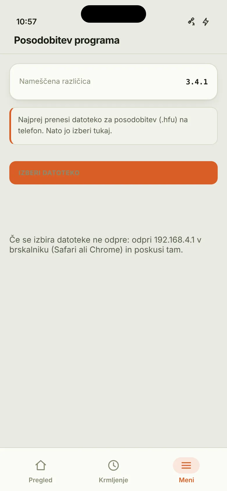
E · Sistemski podatki in ponastavitev
- Različica programa, identiteta in stanje naprave (podpora jih bo morda vprašala).
- Izvozi nastavitve – varnostna kopija na telefon.
- Ponovno zaženi napravo – ohrani vse nastavitve.
- Samodejni portal – glej Omrežje → WiFi.
🩺 Težave in rešitve
Klikni na težavo. Če rešitve ni, vprašaj Bambija (okrogel gumb spodaj desno) ali piši podpori.
SMS in omrežje
Pošljem SMS, krmilnik ne odgovori
- Pošiljaš s prave številke? Odgovarja samo lastniku in osebam s polnim nadzorom.
- Je ukaz pravilen in brez šumnikov? Poskusi INFO.
- Počakaj 1–2 minuti: krmilnik morda krmi, išče GPS ali je v varčnem načinu.
- Ob krmilniku odpri aplikacijo: kartica Signal pokaže stanje kartice in omrežje.
- Ima kartica dobroimetje in je aktivna? Pri kartici Telemach glej opombo.
Piše NB-IoT, SMS pa ne delujejo
Telefon ima signal, krmilnik pa ne
Ročno sem izbral omrežje, zdaj piše Samodejno
Pasica »Krmilnik je bil premaknjen«, čeprav ga nisem premaknil
Krmljenje in motor
Krmilnik ni krmil ob nastavljeni uri
Pošilja »PRESKOCENO, PRAZNO - dopolni!«
Pade premalo ali preveč krme
Prišel je SMS »motor blokiran«
Baterija, WiFi in aplikacija
Gumb »Krmi zdaj« je siv
Krmilnik se ne oglaša (ne SMS ne WiFi)
Baterija se hitro prazni
Ne vidim omrežja HuntersFeeder_Setup
Povezan sem, stran se ne odpre / telefon se prekinja
Lokacija ne najde položaja
• se je motor izklopil zaradi prenapetosti več kot enkrat · • se krmilnik večkrat zapored sam ponovno zažene, čeprav je baterija polna · • vidiš poškodbe, vlago v ohišju, vonj po zažganem ali napihnjeno baterijo · • posodobitev večkrat ne uspe ali se krmilnik po njej ne oglasi.
Podpora nikoli ne potrebuje tvojega PIN-a, PUK-a ali gesel – ne pošiljaj jih.